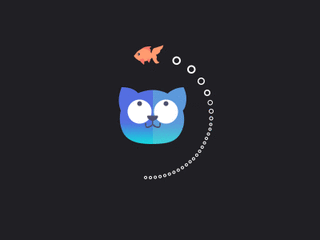

1、Spring是什么?
Spring是一个轻量级的IOC和AOP容器框架。是为Java应用程序提供基础性服务的一套框架，目的是用于简化企业应用程序的开发，它使得开发者只需要关心业务需求。常见的配置方式有三种：基于XML的配置、基于注解的配置、基于Java的配置。
主要由以下几个模块组成：
Spring Core：核心类库，提供IOC服务；
Spring Context：提供框架式的Bean访问方式，以及企业级功能（JNDI、定时任务等）；
Spring AOP：AOP服务；
Spring DAO：对JDBC的抽象，简化了数据访问异常的处理；
Spring ORM：对现有的ORM框架的支持；
Spring Web：提供了基本的面向Web的综合特性，例如多文件上传；
Spring MVC：提供面向Web应用的Model-View-Controller实现。
2、Spring 的优点？
（1）Spring属于低侵入式设计，代码的污染极低；
（2）Spring的DI机制将对象之间的依赖关系交由框架处理，减低组件的耦合性；
（3）Spring提供了AOP技术，支持将一些通用任务，如安全、事务、日志、权限等进行集中式管理，从而提供更好的复用；
（4）Spring对于主流的应用框架提供了集成支持。
3、Spring的AOP理解
OOP称为面向对象，允许开发者定义纵向的关系，但并适用于定义横向的关系，导致了大量代码的重复，而不利于各个模块的重用。
AOP称为面向切面，作为面向对象的一种补充，用于将那些与业务无关，但却对多个对象产生影响的公共行为和逻辑，抽取并封装为一个可重用的模块，这个模块被命名为“切面”（Aspect），减少系统中的重复代码，降低了模块间的耦合度，同时提高了系统的可维护性。可用于权限认证、日志、事务处理等场景。
AOP实现的关键在于代理模式，AOP代理主要分为静态代理和动态代理。静态代理的代表为AspectJ；动态代理则以Spring AOP为代表。
（1）AspectJ是静态代理的增强，所谓静态代理，就是AOP框架会在编译阶段生成AOP代理类，因此也称为编译时增强，他会在编译阶段将AspectJ(切面)织入到Java字节码中，运行的时候就是增强之后的AOP对象。
（2）Spring AOP使用的动态代理，所谓的动态代理就是说AOP框架不会去修改字节码，而是每次运行时在内存中临时为方法生成一个AOP对象，这个AOP对象包含了目标对象的全部方法，并且在特定的切点做了增强处理，并回调原对象的方法。
Spring AOP中的动态代理主要有两种方式，JDK动态代理和CGLIB动态代理：
① JDK动态代理只提供接口的代理，不支持类的代理。核心InvocationHandler接口和Proxy类，InvocationHandler 通过invoke()方法反射来调用目标类中的代码，动态地将横切逻辑和业务编织在一起；接着，Proxy利用 InvocationHandler动态创建一个符合某一接口的的实例, 生成目标类的代理对象。
② 如果代理类没有实现 InvocationHandler 接口，那么Spring AOP会选择使用CGLIB来动态代理目标类。CGLIB（Code Generation Library），是一个代码生成的类库，可以在运行时动态的生成指定类的一个子类对象，并覆盖其中特定方法并添加增强代码，从而实现AOP。CGLIB是通过继承的方式做的动态代理，因此如果某个类被标记为final，那么它是无法使用CGLIB做动态代理的。
（3）静态代理与动态代理区别在于生成AOP代理对象的时机不同，相对来说AspectJ的静态代理方式具有更好的性能，但是AspectJ需要特定的编译器进行处理，而Spring AOP则无需特定的编译器处理。
InvocationHandler 的 invoke(Object proxy,Method method,Object[] args)：proxy是最终生成的代理实例; method 是被代理目标实例的某个具体方法; args 是被代理目标实例某个方法的具体入参, 在方法反射调用时使用。
4、Spring的IOC理解?
（1）IOC就是控制反转，是指创建对象的控制权的转移，以前创建对象的主动权和时机是由自己把控的，而现在这种权力转移到Spring容器中，并由容器根据配置文件去创建实例和管理各个实例之间的依赖关系，对象与对象之间松散耦合，也利于功能的复用。DI依赖注入，和控制反转是同一个概念的不同角度的描述，即 应用程序在运行时依赖IoC容器来动态注入对象需要的外部资源。
（2）最直观的表达就是，IOC让对象的创建不用去new了，可以由spring自动生产，使用java的反射机制，根据配置文件在运行时动态的去创建对象以及管理对象，并调用对象的方法的。
（3）Spring的IOC有三种注入方式 ：构造器注入、setter方法注入、根据注解注入。
IoC让相互协作的组件保持松散的耦合，而AOP编程允许你把遍布于应用各层的功能分离出来形成可重用的功能组件。
5、BeanFactory和ApplicationContext有什么区别？
BeanFactory和ApplicationContext是Spring的两大核心接口，都可以当做Spring的容器。其中ApplicationContext是BeanFactory的子接口。
（1）BeanFactory：是Spring里面最底层的接口，包含了各种Bean的定义，读取bean配置文档，管理bean的加载、实例化，控制bean的生命周期，维护bean之间的依赖关系。ApplicationContext接口作为BeanFactory的派生，除了提供BeanFactory所具有的功能外，还提供了更完整的框架功能：
①继承MessageSource，因此支持国际化。
②统一的资源文件访问方式。
③提供在监听器中注册bean的事件。
④同时加载多个配置文件。
⑤载入多个（有继承关系）上下文 ，使得每一个上下文都专注于一个特定的层次，比如应用的web层。
（2）①BeanFactroy采用的是延迟加载形式来注入Bean的，即只有在使用到某个Bean时(调用getBean())，才对该Bean进行加载实例化。这样，我们就不能发现一些存在的Spring的配置问题。如果Bean的某一个属性没有注入，BeanFacotry加载后，直至第一次使用调用getBean方法才会抛出异常。
②ApplicationContext，它是在容器启动时，一次性创建了所有的Bean。这样，在容器启动时，我们就可以发现Spring中存在的配置错误，这样有利于检查所依赖属性是否注入。 ApplicationContext启动后预载入所有的单实例Bean，通过预载入单实例bean ,确保当你需要的时候，你就不用等待，因为它们已经创建好了。
③相对于基本的BeanFactory，ApplicationContext 唯一的不足是占用内存空间。当应用程序配置Bean较多时，程序启动较慢。
（3）BeanFactory通常以编程的方式被创建，ApplicationContext还能以声明的方式创建，如使用ContextLoader。
（4）BeanFactory和ApplicationContext都支持BeanPostProcessor、BeanFactoryPostProcessor的使用，但两者之间的区别是：BeanFactory需要手动注册，而ApplicationContext则是自动注册。
6、请解释Spring Bean的生命周期？
首先说一下Servlet的生命周期：实例化，初始init，接收请求service，销毁destroy；
Spring上下文中的Bean生命周期也类似，如下：
（1）实例化Bean
对于BeanFactory容器，当客户向容器请求一个尚未初始化的bean时，或初始化bean的时候需要注入另一个尚未初始化的依赖时，容器就会调用createBean进行实例化。对于ApplicationContext容器，当容器启动结束后，通过获取BeanDefinition对象中的信息，实例化所有的bean。
（2）设置对象属性（依赖注入）
实例化后的对象被封装在BeanWrapper对象中，紧接着，Spring根据BeanDefinition中的信息 以及 通过BeanWrapper提供的设置属性的接口完成依赖注入。
（3）处理Aware接口
接着，Spring会检测该对象是否实现了xxxAware接口，并将相关的xxxAware实例注入给Bean：
①如果这个Bean已经实现了BeanNameAware接口，会调用它实现的setBeanName(String beanId)方法，此处传递的就是Spring配置文件中Bean的id值；
②如果这个Bean已经实现了BeanFactoryAware接口，会调用它实现的setBeanFactory()方法，传递的是Spring工厂自身。
③如果这个Bean已经实现了ApplicationContextAware接口，会调用setApplicationContext(ApplicationContext)方法，传入Spring上下文；
（4）BeanPostProcessor
如果想对Bean进行一些自定义的处理，那么可以让Bean实现了BeanPostProcessor接口，那将会调用postProcessBeforeInitialization(Object obj, String s)方法。
（5）InitializingBean 与 init-method
如果Bean在Spring配置文件中配置了 init-method 属性，则会自动调用其配置的初始化方法。
（6）调用postProcessAfterInitialization
如果这个Bean实现了BeanPostProcessor接口，将会调用postProcessAfterInitialization(Object obj, String s)方法；由于这个方法是在Bean初始化结束时调用的，所以可以被应用于内存或缓存技术；
以上几个步骤完成后，Bean就已经被正确创建了，之后就可以使用这个Bean了。
（7）DisposableBean
当Bean不再需要时，会经过清理阶段，如果Bean实现了DisposableBean这个接口，会调用其实现的destroy()方法；
（8）destroy-method
最后，如果这个Bean的Spring配置中配置了destroy-method属性，会自动调用其配置的销毁方法。
7、 解释Spring支持的几种bean的作用域？
Spring容器中的bean可以分为5个范围：
（1）singleton：默认，每个容器中只有一个bean的实例，单例的模式由BeanFactory自身来维护。
（2）prototype：为每一个bean请求提供一个实例。
（3）request：为每一个网络请求创建一个实例，在请求完成以后，bean会失效并被垃圾回收器回收。
（4）session：与request范围类似，确保每个session中有一个bean的实例，在session过期后，bean会随之失效。
（5）global-session：全局作用域，global-session和Portlet应用相关。当你的应用部署在Portlet容器中工作时，它包含很多portlet。如果你想要声明让所有的portlet共用全局的存储变量的话，那么这全局变量需要存储在global-session中。全局作用域与Servlet中的session作用域效果相同。
8、Spring框架中的单例Beans是线程安全的么？
Spring框架并没有对单例bean进行任何多线程的封装处理。关于单例bean的线程安全和并发问题需要开发者自行去搞定。但实际上，大部分的Spring bean并没有可变的状态(比如Serview类和DAO类)，所以在某种程度上说Spring的单例bean是线程安全的。如果你的bean有多种状态的话（比如 View Model 对象），就需要自行保证线程安全。最浅显的解决办法就是将多态bean的作用域由“singleton”变更为“prototype”。
9、Spring如何处理线程并发问题？
在一般情况下，只有无状态的Bean才可以在多线程环境下共享，在Spring中，绝大部分Bean都可以声明为singleton作用域，因为Spring对一些Bean中非线程安全状态采用ThreadLocal进行处理，解决线程安全问题。
ThreadLocal和线程同步机制都是为了解决多线程中相同变量的访问冲突问题。同步机制采用了“时间换空间”的方式，仅提供一份变量，不同的线程在访问前需要获取锁，没获得锁的线程则需要排队。而ThreadLocal采用了“空间换时间”的方式。
ThreadLocal会为每一个线程提供一个独立的变量副本，从而隔离了多个线程对数据的访问冲突。因为每一个线程都拥有自己的变量副本，从而也就没有必要对该变量进行同步了。ThreadLocal提供了线程安全的共享对象，在编写多线程代码时，可以把不安全的变量封装进ThreadLocal。
10-1、Spring基于xml注入bean的几种方式？
（1）Set方法注入；
（2）构造器注入：①通过index设置参数的位置；②通过type设置参数类型；
（3）静态工厂注入；
（4）实例工厂；
详细内容可以阅读：https://blog.csdn.net/a745233700/article/details/89307518
10-2、Spring的自动装配：
在spring中，对象无需自己查找或创建与其关联的其他对象，由容器负责把需要相互协作的对象引用赋予各个对象，使用autowire来配置自动装载模式。
在Spring框架xml配置中共有5种自动装配：
（1）no：默认的方式是不进行自动装配的，通过手工设置ref属性来进行装配bean。
（2）byName：通过bean的名称进行自动装配，如果一个bean的 property 与另一bean 的name 相同，就进行自动装配。
（3）byType：通过参数的数据类型进行自动装配。
（4）constructor：利用构造函数进行装配，并且构造函数的参数通过byType进行装配。
（5）autodetect：自动探测，如果有构造方法，通过 construct的方式自动装配，否则使用 byType的方式自动装配。
基于注解的方式：
使用@Autowired注解来自动装配指定的bean。在使用@Autowired注解之前需要在Spring配置文件进行配置，<context:annotation-config />。在启动spring IoC时，容器自动装载了一个AutowiredAnnotationBeanPostProcessor后置处理器，当容器扫描到@Autowied、@Resource或@Inject时，就会在IoC容器自动查找需要的bean，并装配给该对象的属性。在使用@Autowired时，首先在容器中查询对应类型的bean：
如果查询结果刚好为一个，就将该bean装配给@Autowired指定的数据；
如果查询的结果不止一个，那么@Autowired会根据名称来查找；
如果上述查找的结果为空，那么会抛出异常。解决方法时，使用required=false。
@Autowired可用于：构造函数、成员变量、Setter方法
注：@Autowired和@Resource之间的区别
(1) @Autowired默认是按照类型装配注入的，默认情况下它要求依赖对象必须存在（可以设置它required属性为false）。
(2) @Resource默认是按照名称来装配注入的，只有当找不到与名称匹配的bean才会按照类型来装配注入。
11、Spring 框架中都用到了哪些设计模式？
（1）工厂模式：BeanFactory就是简单工厂模式的体现，用来创建对象的实例；
（2）单例模式：Bean默认为单例模式。
（3）代理模式：Spring的AOP功能用到了JDK的动态代理和CGLIB字节码生成技术；
（4）模板方法：用来解决代码重复的问题。比如. RestTemplate, JmsTemplate, JpaTemplate。
（5）观察者模式：定义对象键一种一对多的依赖关系，当一个对象的状态发生改变时，所有依赖于它的对象都会得到通知被制动更新，如Spring中listener的实现–ApplicationListener。
12、Spring事务的实现方式和实现原理？
Spring事务的本质其实就是数据库对事务的支持，没有数据库的事务支持，spring是无法提供事务功能的。真正的数据库层的事务提交和回滚是通过binlog或者redo log实现的。
（1）Spring事务的种类：
spring支持编程式事务管理和声明式事务管理两种方式：
①编程式事务管理使用TransactionTemplate。
②声明式事务管理建立在AOP之上的。其本质是通过AOP功能，对方法前后进行拦截，将事务处理的功能编织到拦截的方法中，也就是在目标方法开始之前加入一个事务，在执行完目标方法之后根据执行情况提交或者回滚事务。
声明式事务最大的优点就是不需要在业务逻辑代码中掺杂事务管理的代码，只需在配置文件中做相关的事务规则声明或通过@Transactional注解的方式，便可以将事务规则应用到业务逻辑中。
声明式事务管理要优于编程式事务管理，这正是spring倡导的非侵入式的开发方式，使业务代码不受污染，只要加上注解就可以获得完全的事务支持。唯一不足地方是，最细粒度只能作用到方法级别，无法做到像编程式事务那样可以作用到代码块级别。
（2）spring的事务传播行为：
spring事务的传播行为说的是，当多个事务同时存在的时候，spring如何处理这些事务的行为。
① PROPAGATION_REQUIRED：如果当前没有事务，就创建一个新事务，如果当前存在事务，就加入该事务，该设置是最常用的设置。
② PROPAGATION_SUPPORTS：支持当前事务，如果当前存在事务，就加入该事务，如果当前不存在事务，就以非事务执行。‘
③ PROPAGATION_MANDATORY：支持当前事务，如果当前存在事务，就加入该事务，如果当前不存在事务，就抛出异常。
④ PROPAGATION_REQUIRES_NEW：创建新事务，无论当前存不存在事务，都创建新事务。
⑤ PROPAGATION_NOT_SUPPORTED：以非事务方式执行操作，如果当前存在事务，就把当前事务挂起。
⑥ PROPAGATION_NEVER：以非事务方式执行，如果当前存在事务，则抛出异常。
⑦ PROPAGATION_NESTED：如果当前存在事务，则在嵌套事务内执行。如果当前没有事务，则按REQUIRED属性执行。
（3）Spring中的隔离级别：
① ISOLATION_DEFAULT：这是个 PlatfromTransactionManager 默认的隔离级别，使用数据库默认的事务隔离级别。
② ISOLATION_READ_UNCOMMITTED：读未提交，允许另外一个事务可以看到这个事务未提交的数据。
③ ISOLATION_READ_COMMITTED：读已提交，保证一个事务修改的数据提交后才能被另一事务读取，而且能看到该事务对已有记录的更新。
④ ISOLATION_REPEATABLE_READ：可重复读，保证一个事务修改的数据提交后才能被另一事务读取，但是不能看到该事务对已有记录的更新。
⑤ ISOLATION_SERIALIZABLE：一个事务在执行的过程中完全看不到其他事务对数据库所做的更新。
13、Spring框架中有哪些不同类型的事件？
Spring 提供了以下5种标准的事件：
（1）上下文更新事件（ContextRefreshedEvent）：在调用ConfigurableApplicationContext 接口中的refresh()方法时被触发。
（2）上下文开始事件（ContextStartedEvent）：当容器调用ConfigurableApplicationContext的Start()方法开始/重新开始容器时触发该事件。
（3）上下文停止事件（ContextStoppedEvent）：当容器调用ConfigurableApplicationContext的Stop()方法停止容器时触发该事件。
（4）上下文关闭事件（ContextClosedEvent）：当ApplicationContext被关闭时触发该事件。容器被关闭时，其管理的所有单例Bean都被销毁。
（5）请求处理事件（RequestHandledEvent）：在Web应用中，当一个http请求（request）结束触发该事件。
如果一个bean实现了ApplicationListener接口，当一个ApplicationEvent 被发布以后，bean会自动被通知。
14、解释一下Spring AOP里面的几个名词：
（1）Aspect：切面，由一系列切点、增强和引入组成的模块对象，可定义优先级，从而影响增强和引入的执行顺序。事务管理（Transaction management）在java企业应用中就是一个很好的切面样例。
（2）Join point：接入点，程序执行期的一个点，例如方法执行、类初始化、异常处理。 在Spring AOP中，接入点始终表示方法执行。
（3）Advice：增强，切面在特定接入点的执行动作，包括 “around,” “before” and “after”等多种类型。包含Spring在内的许多AOP框架，通常会使用拦截器来实现增强，围绕着接入点维护着一个拦截器链。
（4）Pointcut：切点，用来匹配特定接入点的谓词（表达式），增强将会与切点表达式产生关联，并运行在任何切点匹配到的接入点上。通过切点表达式匹配接入点是AOP的核心，Spring默认使用AspectJ的切点表达式。
（5）Introduction：引入，为某个type声明额外的方法和字段。Spring AOP允许你引入任何接口以及它的默认实现到被增强对象上。
（6）Target object：目标对象，被一个或多个切面增强的对象。也叫作被增强对象。既然Spring AOP使用运行时代理（runtime proxies），那么目标对象就总是代理对象。
（7）AOP proxy：AOP代理，为了实现切面功能一个对象会被AOP框架创建出来。在Spring框架中AOP代理的默认方式是：有接口，就使用基于接口的JDK动态代理，否则使用基于类的CGLIB动态代理。但是我们可以通过设置proxy-target-class=”true”，完全使用CGLIB动态代理。
（8）Weaving：织入，将一个或多个切面与类或对象链接在一起创建一个被增强对象。织入能发生在编译时 （compile time ）(使用AspectJ编译器)，加载时（load time），或运行时（runtime） 。Spring AOP默认就是运行时织入，可以通过枚举AdviceMode来设置。
（1）切面（Aspect）：被抽取的公共模块，可能会横切多个对象。 在Spring AOP中，切面可以使用通用类（基于模式的风格） 或者在普通类中以 @AspectJ 注解来实现。
（2）连接点（Join point）：指方法，在Spring AOP中，一个连接点 总是 代表一个方法的执行。
（3）通知（Advice）：在切面的某个特定的连接点（Join point）上执行的动作。通知有各种类型，其中包括“around”、“before”和“after”等通知。许多AOP框架，包括Spring，都是以拦截器做通知模型， 并维护一个以连接点为中心的拦截器链。
（4）切入点（Pointcut）：切入点是指 我们要对哪些Join point进行拦截的定义。通过切入点表达式，指定拦截的方法，比如指定拦截add、search。
（5）引入（Introduction）：（也被称为内部类型声明（inter-type declaration））。声明额外的方法或者某个类型的字段。Spring允许引入新的接口（以及一个对应的实现）到任何被代理的对象。例如，你可以使用一个引入来使bean实现 IsModified 接口，以便简化缓存机制。
（6）目标对象（Target Object）： 被一个或者多个切面（aspect）所通知（advise）的对象。也有人把它叫做 被通知（adviced） 对象。 既然Spring AOP是通过运行时代理实现的，这个对象永远是一个 被代理（proxied） 对象。
（7）织入（Weaving）：指把增强应用到目标对象来创建新的代理对象的过程。Spring是在运行时完成织入。
切入点（pointcut）和连接点（join point）匹配的概念是AOP的关键，这使得AOP不同于其它仅仅提供拦截功能的旧技术。 切入点使得定位通知（advice）可独立于OO层次。 例如，一个提供声明式事务管理的around通知可以被应用到一组横跨多个对象中的方法上（例如服务层的所有业务操作）。
15、Spring通知类型有哪些？
https://blog.csdn.net/qq_32331073/article/details/80596084
（1）前置通知（Before advice）：在某连接点（join point）之前执行的通知，但这个通知不能阻止连接点前的执行（除非它抛出一个异常）。
（2）返回后通知（After returning advice）：在某连接点（join point）正常完成后执行的通知：例如，一个方法没有抛出任何异常，正常返回。
（3）抛出异常后通知（After throwing advice）：在方法抛出异常退出时执行的通知。
（4）后置通知（After (finally) advice）：当某连接点退出的时候执行的通知（不论是正常返回还是异常退出）。
（5）环绕通知（Around Advice）：包围一个连接点（join point）的通知，如方法调用。这是最强大的一种通知类型。 环绕通知可以在方法调用前后完成自定义的行为。它也会选择是否继续执行连接点或直接返回它们自己的返回值或抛出异常来结束执行。 环绕通知是最常用的一种通知类型。大部分基于拦截的AOP框架，例如Nanning和JBoss4，都只提供环绕通知。
同一个aspect，不同advice的执行顺序：
①没有异常情况下的执行顺序：
around before advice
before advice
target method 执行
around after advice
after advice
afterReturning
②有异常情况下的执行顺序：
around before advice
before advice
target method 执行
around after advice
after advice
afterThrowing:异常发生
java.lang.RuntimeException: 异常发生
advice执行顺序中，有异常的情况执行顺序 around after advice 是不会执行的 正确的顺序是：
1.around before
2.before
3.target method execution
4.after
5.afterthrowing
6.throw exception
关注微信公众号:【皮卡战记】
